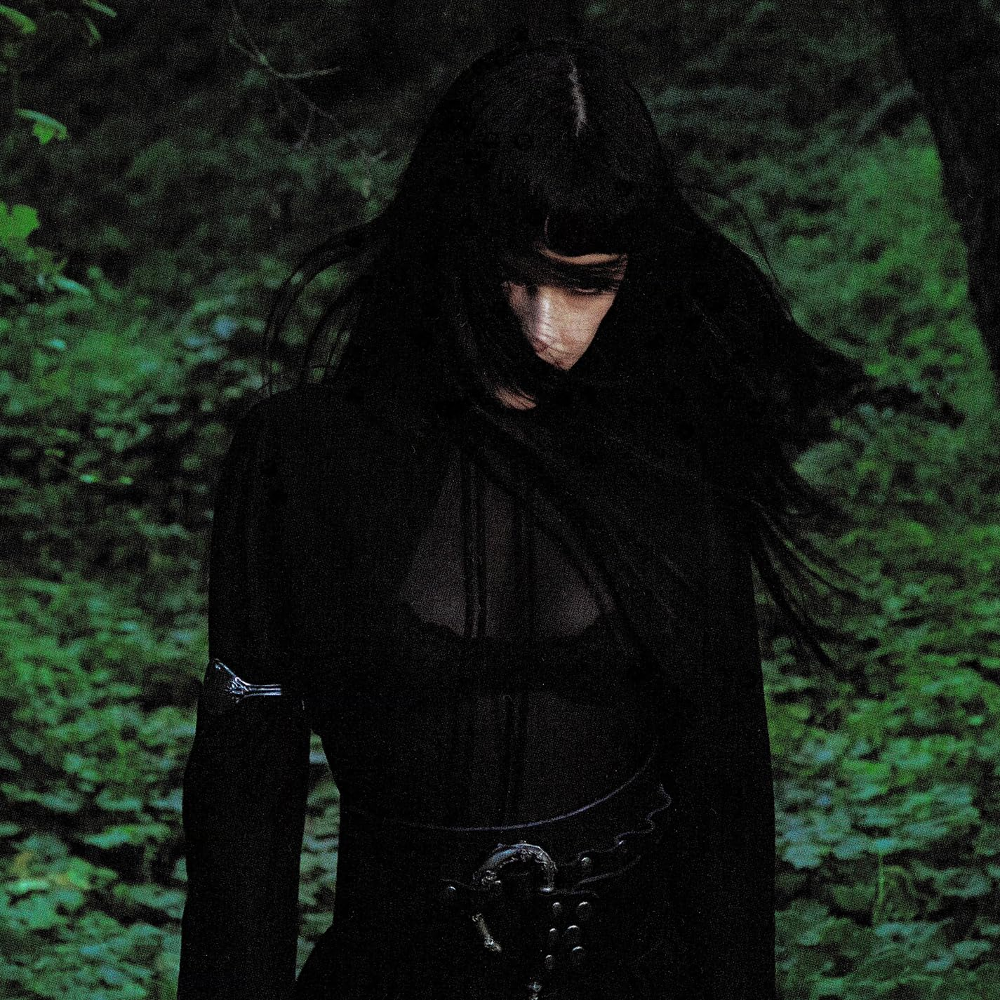

Not the Only One
Not for Radio
Carrera: Ingeniería en Tecnologías de la Información e Innovación Digital
Asignatura: Aplicaciones Web - Grupo: 4A
Equipo Pléyades: Barrera Pérez Ricardo Emiliano - Galindo Escalante Diego Armando - Tapia Ortiz Oscar Enrique

Not for Radio